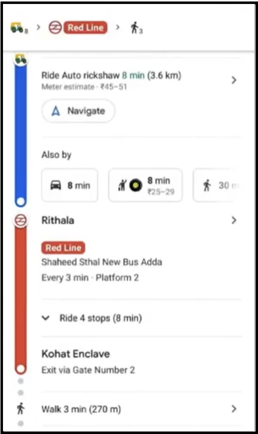

HOME
ABOUT OUR PROGRAM
This project named as TRAVEL PLANNER is basically used to compute the Path between a given Source and destination via the shortest time. In our project, we have used two modes of transportation i.e. via plane or train.
The inspiration of our project comes from the google maps algorithm which not only tells us the shortest path but also suggests the modes of transportation to use for efficient time saving (shown in figure below)

We have used the same concept here with a SLIGHT CHANGE. We have put a constraint that the use of plane in the path must be ONLY once.This change makes the choice of path a little interesting.Firstly, we just used the best possible path but now we have to take the path where plane can only be used once. Other than that, for the rest of the path we can use train.